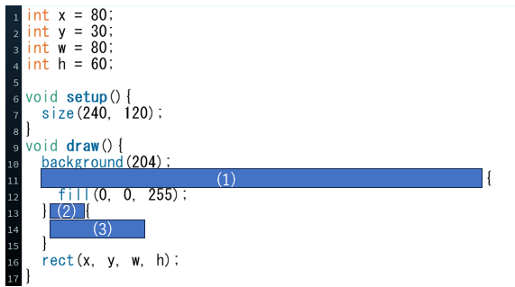

問題のコード
プログラム実行画面
問題文
上図は,マウスの位置が四角形の内側にあるかを判定し,内側だった場合,四角形を青色にするプログラムです.
(1)マウスの位置が四角形の内側にあるかを判定するプログラムを埋めてください.
(2)マウスが四角形の内側にないことを判定するプログラムを埋めてください.
(3)マウスが四角形の外側にあるとき,四角形を白色(値は255)とするプログラムを埋めてください.
(1)ある４つの条件がすべて真ならば四角形の内側にマウスがあるかどうかの判定ができる.
４つの条件はmouseX,mouseYと変数x, y, w, hの大小の比較である.
解答欄
(1)if((mouseX＞x)&&(mouseX＜x+w)&&(mouseY＞y)&&(mouseY＜y+h))
(2)else
(3)fill(255);